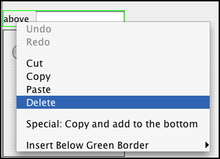

In the Create Form tab, deleting widgets can be accomplished with a click of the right mouse button. Choose the widget you wish to delete, then click on the widget with the right mouse button. A menu will appear with a few options, including delete. Also notice that a light green box will encompass the widget that you have selected for deletion.
Note: if you select a widget that has nested widgets and delete the container widget, all of the nested widgets inside the container will also be deleted.
The option "Special: Copy and add to the bottom" creates an exact duplicate of the widget that you have selected and places it at the bottom of the data form.
You can also choose to insert a widget wherever you happen to be working in the form, rather than the default position at the bottom of the form, by using the option, "Insert Below Green Border."
| Previous page | Return to top of page | Next page |